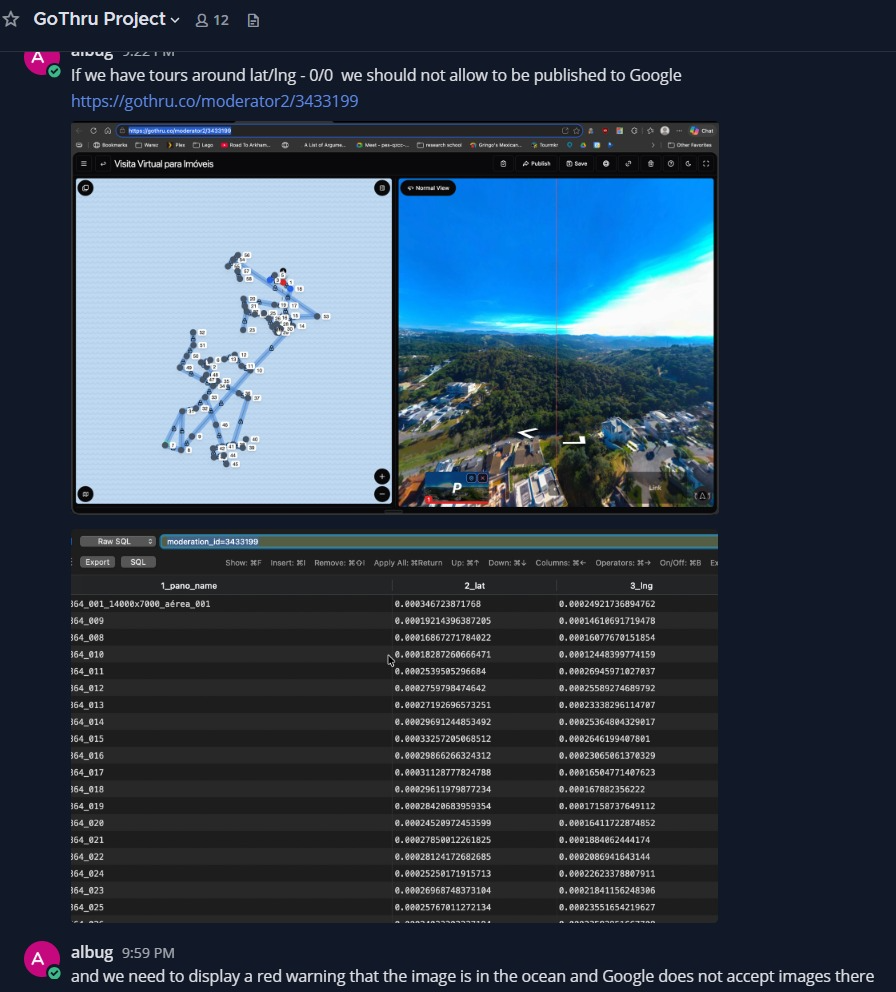
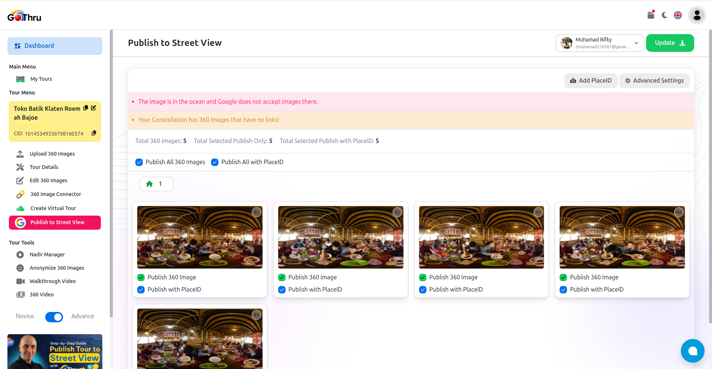
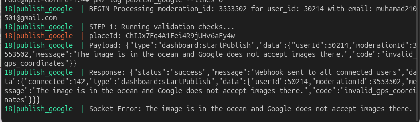
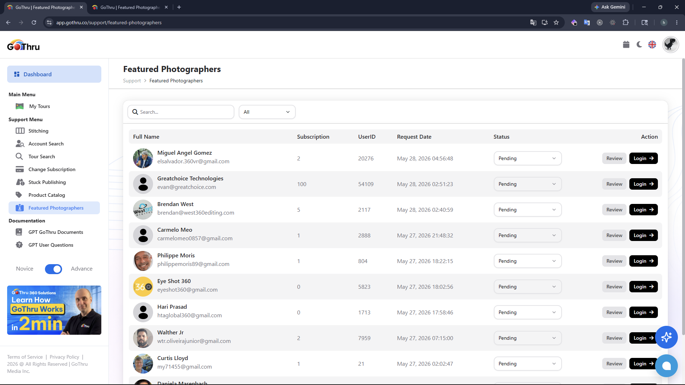

Issues
5
Issues
5
Documentation
2
Generated At
2026-06-01T04:43:59.579570500+00:00
Empty
This API has been migrated to the ADR architecture. For more details, please refer to the following document: https://github.com/GoThruMedia/GoThru-API-New/blob/main/docs/v2/user/get-account-statistic.md
Empty
This API has been migrated to the ADR architecture. For more details, please refer to the following document: https://github.com/GoThruMedia/GoThru-API-New/blob/main/docs/v2/auth/login.md

I've added new danger message on alert info API, so if there has al least one panorama that has geolocation at ocean or null island the message will appear.

I have also addressed this issue in the publication process also

design ( https://www.figma.com/design/jDH5icFzVdkfYrA2VfQoPe/FInal-GoThru--Dashboard?node-id=5924-95786&t=Uzfl94sjEElwjRiA-0 )

Empty
GET /users/account-statisticAuth: middleware('auth') — user_id injected into request context by middleware
Flow:
GetAccountStatisticController@handle builds GetAccountStatisticDto from $request->all().GetAccountStatisticAction::execute(GetAccountStatisticDto).$dto->userId === 0, throws UserAccountStatisticNotFoundException (USER_ACCOUNT.STATISTIC_NOT_FOUND).app_account_stats_{userId} (TTL 3600s). On hit, returns decoded JSON directly.buildStats($userId):
AccountStatisticRepository::isAgencyAdmin($userId) — checks gothru_mod.agency.getSubAgentIds($userId) → appends self → calls getPublishedToursInfoForAgency(array $ids) aggregating moderation.audit across all sub-agents + admin.getPublishedToursInfo($userId) aggregating moderation.audit for the user alone.getGothruPosition($userId) — subquery rank from moderation.audit (users with higher count + 1).getOverlayStatistics($userId) — conditional aggregate from hosted_tours.tours.setex, TTL 3600s).array of stats.ResponseEnvelopeHelper::encryptResult(['account_stats' => $accountStats], messages, 200)UserAccountDomainException → UserAccountExceptionHttpMapper::toStatusCode($e) → responseMessages()\Throwable → ResponseEnvelopeHelper::statusCodeFromThrowable($e) → responseMessages()DTO (app/DTOs/User/Account/GetAccountStatisticDto.php):
| Field | Type | Source | Notes |
|---|---|---|---|
userId | int | request.client_user_id ?? request.user_id | client_user_id takes priority (agency impersonation flow); injected by auth middleware; cast to int, defaults to 0 if absent |
Response (200) — encrypted:
{
"statusCode": 200,
"data": {
"messages": "Data retrieved",
"cry": {
"c1p": "<base64 AES-256-CBC ciphertext>",
"f0ur": "<hex IV>",
"su1fur": "<hex salt>"
},
"ls": "2026-05-29T11:17:30.620453+00:00",
"e4": "en3xk9ab..."
}
}
Decrypted payload shape:
{ "account_stats": { "tours_published": 12, "panos_published": 340, "rank": 5, "hosted_overlays": 3, "google_overlays": 1 }, "messages": "Data retrieved" }
Errors:
| domainCode | HTTP | Condition |
|---|---|---|
USER_ACCOUNT.STATISTIC_NOT_FOUND | 404 | userId resolves to 0 (missing/unauthenticated) |
(fallback \Throwable) | dynamic | ResponseEnvelopeHelper::statusCodeFromThrowable() |
Usage:
curl -X GET https://api.gothru.co/users/account-statistic \
-H "Authorization: {token}"
Notes:
app_account_stats_{userId} — TTL 3600s. Cache is not invalidated on publish; consumers should account for up to 1-hour staleness.rel_type = 'agency' in agency table) receive aggregated stats across all sub-agents with subscribtion = 4.rank is 0 when the user has zero published tours in audit table.encryptResult) regardless of any request header.HelperClass::connectRedis() remains in Action — tracked for future extraction to CacheService.POST /auth/loginAuth: public (no middleware)
Flow:
LoginController@handle builds LoginDto from $request->all().LoginAction::execute(LoginDto).email or password is empty string, throws InvalidCredentialsException (AUTH.INVALID_CREDENTIALS).AuthTokenHelper::encodePassword($dto->password).AuthSessionRepository::findUserByCredentials($dto->email, $encodedPassword) — matches users by user_name + password; if null, throws InvalidCredentialsException.verified_email === 0 or is_active === 0, throws AccountNotActiveException (AUTH.ACCOUNT_NOT_ACTIVE).AuthTokenHelper::createJwtToken(['email' => $dto->email], $ttl) to produce JWT.AuthSessionRepository::upsertGtToken($userId, $userName, $email) — inserts or updates auth.token_id on gothru_mod.['token' => string, 'user_id' => int, 'email' => string, 'user_name' => string].SessionClass: start(), register('auth', ['expiry' => time()+86400, 'user_id' => ..., 'session_id' => ...]).ResponseEnvelopeHelper::responseMessages(['token' => ..., 'cookie' => $session->getCookie()], 'auth.login_success', 200)AuthDomainException → AuthExceptionHttpMapper::toStatusCode($e) → responseMessages()\Throwable → ResponseEnvelopeHelper::statusCodeFromThrowable($e) → responseMessages()DTO (app/DTOs/Auth/LoginDto.php):
| Field | Type | Source | Notes |
|---|---|---|---|
email | string | body email | defaults to ''; empty → AUTH.INVALID_CREDENTIALS |
password | string | body password | defaults to ''; empty → AUTH.INVALID_CREDENTIALS |
Note: repository matches by
users.user_name, so
Response (200):
{
"statusCode": 200,
"data": {
"messages": "Login successful",
"token": "<jwt>",
"cookie": "<session_cookie_value>"
}
}
Set-Cookie: sid=<value>; ...is set bySessionClass::register()at the transport edge.
Errors:
| domainCode | HTTP | Condition |
|---|---|---|
AUTH.INVALID_CREDENTIALS | 409 | email/password empty, or no matching user row |
AUTH.ACCOUNT_NOT_ACTIVE | 422 | user verified_email === 0 or is_active === 0 |
(fallback \Throwable) | dynamic | ResponseEnvelopeHelper::statusCodeFromThrowable() |
Usage:
curl -X POST https://api.gothru.co/auth/login \
-H "Content-Type: application/json" \
-d '{"email": "your_username", "password": "your_password"}'
Notes:
email field maps to users.user_name column — not the user's email address.LoginController::SESSION_LIFETIME.SessionClass::start()/register()/getCookie() intentionally retained at Controller (transport-edge HTTP concern), same pattern as LogoutController.auth.token_id) is upserted on every successful login — previous token is invalidated.SessionClass retained at transport edge (acceptable); AuthTokenHelper is a pure static helper with zero legacy dependency.